推論統計
統計與推論
敘述統計純粹描述樣本的特性，但是推論統計則必須根據樣本去推論出母體的分配情況，然而這種推論並非確定性的推論，而是一種機率性的推論。
估計
| 被估計參數 | 推論分布公式 | 相關分配 | 上下界限 |
|---|---|---|---|
 ( (  已知) 已知) |
 |
Z:標準常態 | 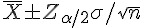 |
| ( 未知) |
 |
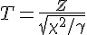 |  |
| 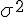 | 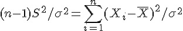 |  ]]:卡方分布 ]]:卡方分布 |
 _ 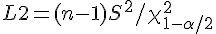 _ 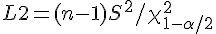 |
| 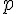 |  |
Z:標準常態 | 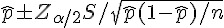 |
說明： 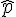 其實是一種 0-1 情況的平均值。
檢定
| 被檢定參數 | 推論分布公式 | 相關分配 | 上下界限 |
|---|---|---|---|
 ( 已知) ( 已知) |
 |
Z:標準常態 |  |
| ( 未知) |
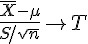 |  |
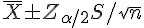 |
| 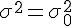 | 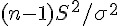 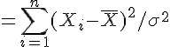 |  :卡方分布 :卡方分布 |
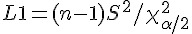  |
| 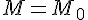 | 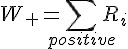 (所有正排名) 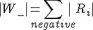 (所有負排名) |
Wilcoxon Sign Rank | 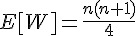 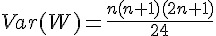 |
| 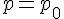 | 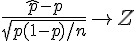 | Z:標準常態 | 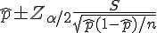 |
| 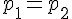 | 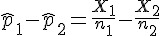 | Z:標準常態 | 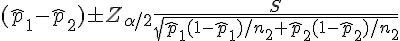 |
 |
|||
| 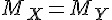 |
估計
根據單一母體所抽出的樣本，推論統計可以猜測母體中隨機變數 X 的「分布、平均值  、變異數 、比例 p 」等等參數值，這種推論的方法稱之為估計。
、變異數 、比例 p 」等等參數值，這種推論的方法稱之為估計。
點估計
進行估計時，如果只估計某參數的最可能值，那就稱為「點估計」，通常點估計必須滿足「不偏估計式」的條件，才是一個好的估計式，以下是不偏估計式的定義。
不偏估計式
若 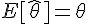 則稱估計式 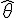 為  的不偏估計式。
的不偏估計式。
區間估計
進行估計時，如果估計某參數的可能範圍，那就稱為「區間估計」，此種區間乃是在某種機率的確信程度之下所進行的估計，因此被稱為是「信賴區間」，其意義如下。
信賴區間：估計式

檢定
根據某一組樣本，推論統計可以進行實驗的檢定某個假設 H1 是否可能，其方法是透過否定對立假設 H0，看看 H0 是否不太可能發生。
- H1：稱為研究假設 (research hypothesis) 或對立假設 (alternhative hypothesis)
- H0：稱為虛無假設 (null hypothesis)
透過推論統計，我們可以檢查實驗結果是否具有顯著性 (假設檢定)，也就是實驗的假設 H1 是否要被接受，由於 H0 是H1 的對立假設 (不是 H0 就是 H1，也就是 H1 = not H0)，因此一旦否決了 H0 就代表接受了 H1。
在進行假設檢定的推論時，我們可能推論正確，也可能推論錯誤，以下是四種可能的推論情況。
| 決策 | H0 為真 | H1 為真 |
|---|---|---|
| 拒絕 H0 | 型 I 錯誤 (機率是 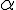 ) | 正確決策 (機率是檢定力 power) |
| 無法拒絕 H0 | 正確決策 | 型 II 錯誤 (機率是  ) ) |
當然我們會希望正確決策的機會越大越好，而錯誤決策的機會越小越好。推論統計可以告訴我們各類型正確與錯誤決策的機率，以便讓我們知道是否要接受 H1 而拒絕 H0。
單組樣本的檢定
- 平均值的檢定？ (
 ) -- 學生 T 檢定
) -- 學生 T 檢定 - 變異數的檢定？ (
 ) -- 卡方 檢定
) -- 卡方 檢定 - 比例 p 的檢定？ (
 ) -- 常態 Z 檢定
) -- 常態 Z 檢定 - 中位數 M 的檢定？ (
 ) -- 無母數方法 Wilcoxon Sign-Rank 檢定
) -- 無母數方法 Wilcoxon Sign-Rank 檢定
範例：平均值
根據中央極限定理， 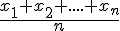 會趨向常態性，因此只要樣本數夠多，我們就可以利用常態分布進行平均值
方法：用 Z 或 T 的統計量，進行常態分配平均的假設檢定。(但常態性如何確保，通常有兩種基本假設，第一種是母體分布為常態性，第二種是樣本數夠大，根據大數法則 會趨向常態性)。
兩組樣本的檢定
根據兩個母體所抽出的樣本，推論統計可以猜測兩個母體中隨機變數 X, Y 的「平均值差異 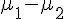 、標準差距離 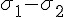 、比例差異 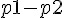 、中位數差異 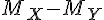 」等數值，以檢定兩組樣本是否來自同一母體。
- 比較兩平均數
 的差值 (
的差值 (  ) 的檢定
) 的檢定 - 比較兩變異數
 的差值 (
的差值 (  ) 的檢定
) 的檢定 - 比較兩機率 p1, p2 的差值 ( H0: p1-p2=0 ) 的檢定
- 比較兩組中位數 M 的差值 (
 ) 的檢定 (無母數方法)
) 的檢定 (無母數方法)
多組樣本的檢定 (ANOVA 變異數分析）

- 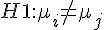 對於某些 i, j 而言。
無母數統計方法
指的是樣本來自某一分配，但不預設這個分配的特性 (分配的參數，稱為母數，通常為未知)，這種情況稱為無母數統計方法
參考文獻
習題
估計 * [[[st:meanIntervalEstEx | 平均值的信賴區間估計 (母體變異數已知)]]] * [[[st:varIntervalEstEx | 變異數的信賴區間估計]]] (常態母體 => 服從自由度為 n-1 的卡方分配) * [[[st:tTestEx | 平均值的信賴區間估計 (母體變異數未知)]]] (用 S 取代  => 學生 t 分配)
=> 學生 t 分配)
檢定 * [[[st:meanTestEx | 分配平均的假設檢定]]] ( 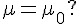 ) * [[[st:varTestEx | 變異數假設檢定]]] ( 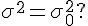 ) * [[[st:medianTestEx | 中位數的假設檢定]]] ( 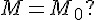 ) (無母數方法, Wilcoxon Sign-Rank 檢定)
比例的推論 * [[[st:proportionEstEx | 比例的推論]]] ( 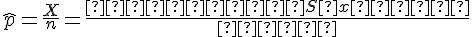 , 有事前估計與沒有事前估計的推論所需樣本數不同) * [[[st:proportionTestEx | 比例的檢定]]] ( 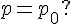 ) * [[[st:medianTestEx | 比較兩比例：估計+檢定]]] ( 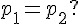 )
比較兩平均與變異數 * 練習題1：[[[st:proportionEstEx | 比較兩平均]]] ( 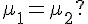 ) * 練習題2：[[[st:proportionTestEx | 比較兩變異數]]] ( 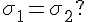 , F 分配) * 練習題3：[[[st:proportionTestEx | 比較兩平均 (變異數相等)]]]